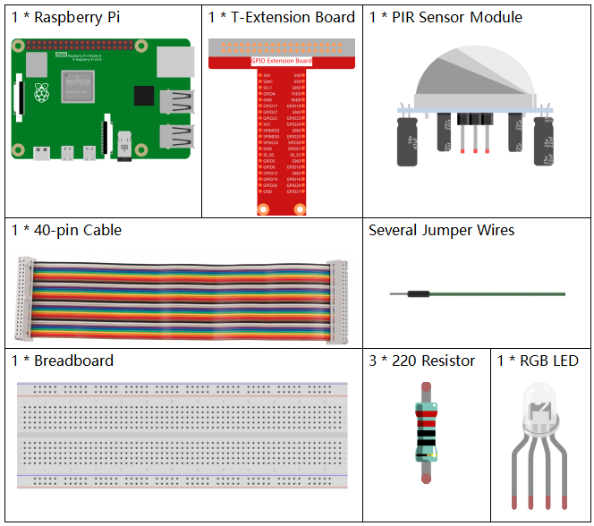

Nota
Ciao, benvenuto nella Community di SunFounder per appassionati di Raspberry Pi, Arduino e ESP32 su Facebook! Approfondisci l’uso di Raspberry Pi, Arduino e ESP32 insieme ad altri appassionati.
Perché unirsi?
Supporto esperto: Risolvi problemi post-vendita e sfide tecniche con l’aiuto della nostra community e del team.
Impara e condividi: Scambia consigli e tutorial per migliorare le tue competenze.
Anteprime esclusive: Ottieni accesso anticipato a nuove presentazioni di prodotti e anticipazioni.
Sconti speciali: Approfitta di sconti esclusivi sui nostri nuovi prodotti.
Promozioni e omaggi festivi: Partecipa a promozioni festive e a giveaway.
👉 Pronto a esplorare e creare con noi? Clicca su [Qui] e unisciti subito!
2.2.4 PIR
Introduzione
In questo progetto realizzeremo un dispositivo utilizzando sensori piroelettrici a infrarossi per il corpo umano. Quando qualcuno si avvicina, il LED si accende automaticamente. Altrimenti, la luce si spegne. Questo sensore di movimento a infrarossi è in grado di rilevare l’infrarosso emesso da esseri umani e animali.
Componenti
Principio
Il sensore PIR rileva la radiazione termica infrarossa, utilizzata per individuare la presenza di organismi che emettono questa radiazione.
Il sensore PIR è suddiviso in due sezioni collegate a un amplificatore differenziale. Quando un oggetto stazionario è davanti al sensore, le due sezioni ricevono la stessa quantità di radiazione e l’uscita è zero. Quando un oggetto in movimento si avvicina, una delle sezioni riceve più radiazione dell’altra, generando un’oscillazione dell’uscita tra alti e bassi livelli. Questa variazione di tensione segnala la rilevazione del movimento.

Dopo che il modulo di rilevamento è stato collegato, è previsto un minuto di inizializzazione. Durante l’inizializzazione, il modulo emetterà un segnale da 0 a 3 volte a intervalli. Successivamente, il modulo entra in modalità standby. Assicurati di evitare l’interferenza di fonti di luce o altre fonti sul modulo per prevenire falsi allarmi causati da segnali di disturbo. È preferibile anche evitare un’eccessiva esposizione al vento, che potrebbe interferire con il sensore.

Regolazione della distanza
Ruotando la manopola del potenziometro di regolazione della distanza in senso orario, aumenta la portata massima di rilevamento fino a circa 0-7 metri. Girandola in senso antiorario, la distanza di rilevamento si riduce, raggiungendo un minimo di circa 0-3 metri.
Regolazione del ritardo
Ruotando la manopola del potenziometro di regolazione del ritardo in senso orario, aumenta il ritardo di rilevamento fino a un massimo di 300 secondi. Al contrario, ruotandola in senso antiorario, riduci il ritardo fino a un minimo di 5 secondi.
Due modalità di trigger: (scegli modalità diverse con il ponticello).
H: Modalità di trigger ripetibile, dopo aver rilevato una persona, il modulo emette un livello alto. Durante il periodo di ritardo, se qualcuno entra nell’area di rilevamento, l’uscita rimane a livello alto.
L: Modalità di trigger non ripetibile, emette un livello alto al rilevamento della persona. Dopo il ritardo, l’uscita passa automaticamente dal livello alto al livello basso.
Schema Elettrico

Procedure Sperimentali
Passo 1: Costruisci il circuito.

Passo 2: Accedi alla cartella del codice.
cd ~/davinci-kit-for-raspberry-pi/c/2.2.4/
Passo 3: Compila il codice.
gcc 2.2.4_PIR.c -lwiringPi
Passo 4: Esegui il file eseguibile.
sudo ./a.out
Dopo l’esecuzione del codice, il PIR rileva l’ambiente circostante e fa illuminare l’LED RGB di giallo se rileva qualcuno di passaggio. Sul modulo PIR ci sono due potenziometri: uno regola la sensibilità e l’altro la distanza di rilevamento. Per ottimizzare il funzionamento del modulo PIR, è necessario girarli entrambi in senso antiorario fino in fondo.

Nota
Se il programma non funziona dopo l’esecuzione o viene visualizzato un errore: "wiringPi.h: Nessun file o directory di questo tipo», consulta Il codice C non funziona?.
Codice
#include <wiringPi.h>
#include <softPwm.h>
#include <stdio.h>
#define uchar unsigned char
#define pirPin 0 // pir collegato a GPIO0
#define redPin 1
#define greenPin 2
#define bluePin 3
void ledInit(void){
softPwmCreate(redPin, 0, 100);
softPwmCreate(greenPin,0, 100);
softPwmCreate(bluePin, 0, 100);
}
void ledColorSet(uchar r_val, uchar g_val, uchar b_val){
softPwmWrite(redPin, r_val);
softPwmWrite(greenPin, g_val);
softPwmWrite(bluePin, b_val);
}
int main(void)
{
int pir_val;
if(wiringPiSetup() == -1){ // se l'inizializzazione di wiring fallisce, stampa un messaggio sullo schermo
printf("setup wiringPi failed !");
return 1;
}
ledInit();
pinMode(pirPin, INPUT);
while(1){
pir_val = digitalRead(pirPin);
if(pir_val== 1){ //se il valore letto dal pir è di livello HIGH
ledColorSet(0xff,0xff,0x00);
}
else {
ledColorSet(0x00,0x00,0xff);
}
}
return 0;
}
Spiegazione del Codice
void ledInit(void);
void ledColorSet(uchar r_val, uchar g_val, uchar b_val);
Questi codici sono utilizzati per impostare il colore dell’LED RGB; per maggiori dettagli, consulta 1.1.2 LED RGB.
int main(void)
{
int pir_val;
//……
pinMode(pirPin, INPUT);
while(1){
pir_val = digitalRead(pirPin);
if(pir_val== 1){ //se il valore letto dal pir è di livello HIGH
ledColorSet(0xff,0xff,0x00);
}
else {
ledColorSet(0x00,0x00,0xff);
}
}
return 0;
}
Quando il PIR rileva lo spettro infrarosso umano, l’LED RGB emette luce gialla; altrimenti, emette luce blu.